Before You Start
- In the following example, we demonstrate key package functionality using the test dataset that is included in the package
- You can follow along because all test data and associated CSV input files are contained in the package.
- Additional examples are also available under the [Example vignettes]tab
Components of the test dataset
-
PE short read amplicon data
- Files: S1_R1.fastq.gz, S1_R2.fastq.gz, S2_R1.fastq.gz,
S2_R1.fastq.gz
- The files must end in either R1.fastq.gz , or R2.fastq.gz and each sample must have both R1 and R2 files.
- Files: S1_R1.fastq.gz, S1_R2.fastq.gz, S2_R1.fastq.gz,
S2_R1.fastq.gz
-
metadata.csv
- New row for each unique sample
- Samples entered twice if samples contain two pooled metabarcodes, as in the test data template
-
primerinfo_params.csv
- New row for each unique barcode and associated primer sequence
- Optional cutadapt and DADA2 parameters
-
Taxonomy databases
- UNITE fungal database (abridged version)
- oomyceteDB
Format of the PE read files
The package takes forward and reverse Illumina short read sequence data.
Format of file names To avoid errors, the only characters that are acceptable in sample names are letters and numbers. Characters can be separated by underscores, but no other symbols. The files must end with the suffix R1.fastq.gz or R2.fastq.gz.
Format of metadata file (metadata.csv)
- The format of the CSV file is simple.
- A template is here.
- The only two required columns (with these headers)
are:
- Column 1. sample_name
- Column 2. primer_info
- Column 1. sample_name
Additional columns
- Other columns should be pasted after these two columns.
- They can be referenced later during the analysis steps and save a step of loading metadata later.
Notes
- S1 and S2 are come from a rhododendron rhizobiome dataset and are a
random subset of the full set of reads.
- S1 and S2 are included twice in the ‘metadata.csv’ sheet. This is
because these two samples contain pooled metabarcodes (ITS1 and
rps10).
- To demultiplex and run both analyses in tandem, include the same sample twice under sample_name, and then change the primer_name.
Here is what the metadata.csv looks like for this test dataset:
| sample_name | primer_name | organism |
|---|---|---|
| S1 | rps10 | Cry |
| S2 | rps10 | Cin |
| S1 | its | Cry |
| S2 | its | Cin |
Format of primer and parameters file (primerinfo_parms.csv)
DADA2 Primer sequence information and user-defined parameters are placed in *primerinfo_params.csv
- To simplify how functions are called, user will provide parameters within this input file.
- We recommend using the template linked here.
- Remember to add any additional optional DADA2 parameters you want to use.
Required columns:
- primer_name
- Compatible options: rps10, its, r16S, other1, other2
- forward primer sequence
- reverse primer sequence
Example template for ‘primerinfo_params.csv’
| primer_name | forward | reverse | already_trimmed | minCutadaptlength | multithread | verbose | maxN | maxEE_forward | maxEE_reverse | truncLen_forward | truncLen_reverse | truncQ | minLen | maxLen | minQ | trimLeft | trimRight | rm.lowcomplex | minOverlap | maxMismatch | min_asv_length |
|---|---|---|---|---|---|---|---|---|---|---|---|---|---|---|---|---|---|---|---|---|---|
| rps10 | GTTGGTTAGAGYARAAGACT | ATRYYTAGAAAGAYTYGAACT | FALSE | 100 | TRUE | FALSE | 1.00E+05 | 5 | 5 | 0 | 0 | 5 | 150 | Inf | 0 | 0 | 0 | 0 | 15 | 0 | 50 |
| its | CTTGGTCATTTAGAGGAAGTAA | GCTGCGTTCTTCATCGATGC | FALSE | 50 | TRUE | FALSE | 1.00E+05 | 5 | 5 | 0 | 0 | 5 | 50 | Inf | 0 | 0 | 0 | 0 | 15 | 0 | 50 |
For more info on parameter specifics, see Documentation
Reference Database Format
- For now, the package is compatible with the following databases:
- oomycetedb from: https://grunwaldlab.github.io/OomyceteDB/
- SILVA 16S database with species assignments: https://www.arb-silva.de/
- UNITE fungal database from https://unite.ut.ee/repository.php
- A user can select up to two other databases, but will first need to
reformat headers exactly like the SILVA database headers.
- See more in the ‘Documentation’ tab.
- oomycetedb from: https://grunwaldlab.github.io/OomyceteDB/
Databases are downloaded from these sources and then placed in the from the user-specified data folder where raw data files and csv files are located.
Additional Notes
- Computer specifications may be a limiting factor.
- If you are using the SILVA or UNITE databases for taxonomic
assignment steps, an ordinary personal computer (unless it has
sufficient RAM) may not have enough memory for the taxonomic assignment
steps, even with few samples.
- The test databases and reads are subsetted and the following example
should run on a personal computer with at least 16 GB of RAM.
- If computer crashes during the taxonomic assignment step, you will
need to switch to a computer with sufficient memory.
- You must ensure that you have enough storage to save intermediate files in a temporary directory (default) or user-specified directory before proceeding.
Loading the Package
For now, the package will be loaded by retrieving it from GitHub. Submission to CRAN is in progress.
devtools::install_github("grunwaldlab/demulticoder")
library("demulticoder")
library("metacoder")Reorganize data tables and set-up data directory structure
The sample names, primer sequences, and other metadata are reorganized in preparation for running Cutadapt to remove primers.
analysis_setup<-demulticoder::prepare_reads(
data_directory = system.file("extdata", package = "demulticoder"),
output_directory = "~/output_test_dataset",
tempdir_path = "~/temp_test_dataset",
tempdir_id = "test_dataset",
overwrite_existing = TRUE)Remove primers with Cutadapt
Before running Cutadapt, please ensure that you have installed it
demulticoder::cut_trim(
analysis_setup,
cutadapt_path = "/usr/bin/cutadapt",
overwrite_existing = TRUE)
#> Running Cutadapt 3.5 for its sequence data
#> Read in 2564 paired-sequences, output 1479 (57.7%) filtered paired-sequences.
#> Read in 1996 paired-sequences, output 1215 (60.9%) filtered paired-sequences.
#> Running Cutadapt 3.5 for rps10 sequence data
#> Read in 1830 paired-sequences, output 1429 (78.1%) filtered paired-sequences.
#> Read in 2090 paired-sequences, output 1506 (72.1%) filtered paired-sequences.
ASV inference step
Raw reads will be merged and ASVs will be inferred
make_asv_abund_matrix(
analysis_setup,
overwrite_existing = TRUE)
#> 710804 total bases in 2694 reads from 2 samples will be used for learning the error rates.
#> Initializing error rates to maximum possible estimate.
#> selfConsist step 1 ..
#> selfConsist step 2
#> selfConsist step 3
#> Convergence after 3 rounds.
#> Error rate plot for the Forward read of primer pair its
#> Warning in scale_y_log10(): log-10 transformation introduced
#> infinite values.
#> Sample 1 - 1479 reads in 660 unique sequences.
#> Sample 2 - 1215 reads in 613 unique sequences.
#> 724230 total bases in 2694 reads from 2 samples will be used for learning the error rates.
#> Initializing error rates to maximum possible estimate.
#> selfConsist step 1 ..
#> selfConsist step 2
#> selfConsist step 3
#> Convergence after 3 rounds.
#> Error rate plot for the Reverse read of primer pair its
#> Warning in scale_y_log10(): log-10 transformation introduced
#> infinite values.
#> Sample 1 - 1479 reads in 1019 unique sequences.
#> Sample 2 - 1215 reads in 814 unique sequences.
#> 1315 paired-reads (in 21 unique pairings) successfully merged out of 1416 (in 32 pairings) input.
#> Duplicate sequences in merged output.
#> 1063 paired-reads (in 25 unique pairings) successfully merged out of 1108 (in 28 pairings) input.
#> Duplicate sequences detected and merged.
#> Identified 0 bimeras out of 38 input sequences.
#> 824778 total bases in 2935 reads from 2 samples will be used for learning the error rates.
#> Initializing error rates to maximum possible estimate.
#> selfConsist step 1 ..
#> selfConsist step 2
#> Convergence after 2 rounds.
#> Error rate plot for the Forward read of primer pair rps10
#> Warning in scale_y_log10(): log-10 transformation introduced
#> infinite values.
#> Sample 1 - 1429 reads in 933 unique sequences.
#> Sample 2 - 1506 reads in 1018 unique sequences.
#> 821851 total bases in 2935 reads from 2 samples will be used for learning the error rates.
#> Initializing error rates to maximum possible estimate.
#> selfConsist step 1 ..
#> selfConsist step 2
#> selfConsist step 3
#> Convergence after 3 rounds.
#> Error rate plot for the Reverse read of primer pair rps10
#> Warning in scale_y_log10(): log-10 transformation introduced
#> infinite values.
#> Sample 1 - 1429 reads in 1044 unique sequences.
#> Sample 2 - 1506 reads in 1284 unique sequences.
#> 1420 paired-reads (in 2 unique pairings) successfully merged out of 1422 (in 4 pairings) input.
#> 1503 paired-reads (in 5 unique pairings) successfully merged out of 1504 (in 6 pairings) input.
#> Identified 0 bimeras out of 5 input sequences.
#> $its
#> [1] "~/temp_test_dataset/test_dataset/asvabund_matrixDADA2_its.RData"
#>
#> $rps10
#> [1] "~/temp_test_dataset/test_dataset/asvabund_matrixDADA2_rps10.RData"Taxonomic assignment step
Using the core assignTaxonomy function from DADA2, taxonomic assignments will be given to ASVs.
assign_tax(
analysis_setup,
asv_abund_matrix,
retrieve_files=TRUE,
overwrite_existing = TRUE)
#> Duplicate sequences detected and merged.
#> samplename_barcode input filtered denoisedF denoisedR merged nonchim
#> 1 S1_its 2564 1479 1425 1431 1315 1315
#> 2 S2_its 1996 1215 1143 1122 1063 1063
#> samplename_barcode input filtered denoisedF denoisedR merged nonchim
#> 1 S1_rps10 1830 1429 1429 1422 1420 1420
#> 2 S2_rps10 2090 1506 1505 1505 1503 1503Format of output matrices
The default output is a CSV file per metabarcode with the inferred ASVs and sequences, taxonomic assignments, and bootstrap supports provided by DADA2. These data can then be used as input for downstream steps.
Here we show the first rows of the rps10 matrix checking that ASV sequences look to be the correct length and taxonomic assignments seem reasonable.
rps10_matrix<-read.csv("final_asv_abundance_matrix_rps10.csv", header=TRUE)
kable(rps10_matrix, row.names = TRUE) %>%
kable_styling(bootstrap_options = c("striped", "hover", "condensed", "responsive", full_width = F, font_size = 6)) %>%
scroll_box(width = "100%", height = "100px", extra_css = "thead th { white-space: nowrap; }")| asv_id | sequence | dada2_tax | S1_rps10 | S2_rps10 | |
|---|---|---|---|---|---|
| 1 | asv_1 | GAAAATCTTTGTGTCGGTGGTTCAAATCCACCTCCAGACAAATTAATTTTTTAAAACTTATGTTTATATTAAGAATTACATTTAAATCTATTAAAAAAATAAATAACATTAAACCTATTTTATTAAATCAAAAAAATTTAAATAAATTTAATAATATTAAAATAAATGGAATATTTAAAACAAAAAATAAAAATAAAATTTTTACAGTATTAAAATCACCACATGTTAATAAAAAAGCACGTGAACATTTTATTTATAAAAATTTTACACAAAAAGTTGAAATTAAATGTTTAAATATTTTTCAATTATTAAATTTTTTAATTTTGATTAAAAAAATCTTAACAGAAAATTTTATTATTACTACAAAAATAATTAAACAATAATTAATATATGCTTATAGCTTAATGGATAAAGCATTAGATTGCGGATCTACAAAATGAA | Stramenopila–100–Kingdom;Oomycota–100–Phylum;Oomycetes–100–Class;Peronosporales–26–Order;Peronosporaceae–26–Family;Phytophthora–23–Genus;Phytophthora_sp.kununurra–13–Species;oomycetedb_650–13–Reference | 842 | 17 |
| 2 | asv_2 | GAAAATCTTTGTGTCGGTGGTTCAAGTCCGCCTCCAAACATCTTATAAAAATGTATGTATATTTTACGAATTAGTTTTAAATCAGTAGAAAAAATAAATGAATTAAAAAAAAATATCTCAAAAATAAAAAAAATATATAATTTTAAAAATTTAAAAGTAAATGGTATTTTTAGAACAAAAAATAAAAATAAAATTTTTACATTATTAAAATCACCCCATGTTAATAAAAAATCACGTGAACATTTTATATATAAAAATTATATTCAAAAAATTGATTTAAATTTTTCAAATTTTTTTCAATTATTAAATTTTTTAGTAATTTTAAAAAAAATATTATCTAAAGATTTTTTAATCAATATCAAAATTATTAAAAAAAATAAAAAAAATATGCTTATAGCTTAATGGATAAAGCGTTAGATTGCGGATCTATAAAATGAA | Stramenopila–100–Kingdom;Oomycota–100–Phylum;Oomycetes–100–Class;Pythiales–100–Order;Pythiaceae–100–Family;Pythium–100–Genus;Pythium_dissotocum–54–Species;oomycetedb_750–25–Reference | 578 | 220 |
| 3 | asv_3 | GAAAATCTTTGTGTCGGTGGTTCAAGTCCACCTCCAGACAAAAATAATAACTATGTATATTTTAAGAATAACTTTTAAATCAATACAAAAAATAAATAATATTAAAAAAAATTTATTAAAATTAAAAAAAATAAATAAATTTAAAAATATTCAAATAAAAGGAATATTTAAAATAAAAGATAAAAATAAAATTTTTACTTTATTAAAATCACCTCACGTAAATAAAAAATCTCGTGAACATTTTATTTATAAAAATTATACTCAAAAAATAGATGTAAAATTTTCAAATATTATTGAATTATTTAATTTTATAATACTTATTAAAAAAGTTTTAACTAAAAATTTTATAATAAATTTTAAAATTATAAAATATAATAAAAAAAAAATGCTTATAGCTTAATGGATAAAGCGTTAGATTGCGGATCTATAAAATGAA | Stramenopila–100–Kingdom;Oomycota–100–Phylum;Oomycetes–100–Class;Pythiales–100–Order;Pythiaceae–100–Family;Globisporangium–100–Genus;Globisporangium_cryptoirregulare–20–Species;oomycetedb_40–20–Reference | 0 | 587 |
| 4 | asv_4 | GAAAATCTTTGTGTCGGTGGTTCAAATCCGCCTCCAAACAAAAATATAAATTATTTTATATGTATATTTTAAGAATAAGTTTTAAATCTGTATCAAAAATAGATAAAATTAAAAAAGAATTATCAAGATTAAAAAAAATATATAATTTTAAAAATATAACAATTAATGGTATTTTTAAAACAAAAAATAAAGATAAAATTTTTACATTATTAAAATCACCTCATGTTAATAAAAAATCTCGCGAACATTTTATTTATAAAAATTATGTACAAAAAATAGATTTAAATTTTATTAATATTTTTCAATTAATAAATTTTTTAATAATTTTAAAAAAAAAATTATCAAAAAATGTATTAATAAATGTAAAAATAATTAAAAAATAAAAAAATATGCTTATAGCTTAATGGATAAAGCGTTAGATTGCGGATCTATAAAATGAA | Stramenopila–100–Kingdom;Oomycota–100–Phylum;Oomycetes–100–Class;Pythiales–94–Order;Pythiaceae–94–Family;Pythium–89–Genus;Pythium_aphanidermatum–19–Species;oomycetedb_727–19–Reference | 0 | 516 |
| 5 | asv_5 | GAAAATCTTTGTGTCGGTGGTTCAAGTCCGCCTCCAAACATCTTATAAAAATGTATGTATATTTTACGAATTAGTTTTAAATCAGTAGAAAAAATAAATGAATTAAAAAAAAATATCTCAAAAATAAAAAAAATATATAATTTTAAAAATTTAAAAGTAAAATGGTATTTTTAGAACAAAAAATAAAAATAAAATTTTTACATTATTAAAATCACCCCATGTTAATAAAAAATCACGTGAACATTTTATATATAAAAATTATATTCAAAAAATTGATTTAAATTTTTCAAATTTTTTTCAATTATTAAATTTTTTAGTAATTTTAAAAAAAACATTATCTAAAGATTTTTTAATCAATATTAAAATTATTAAAAAAAATAAAAAAATATGCTTATAGCTTAATGGATAAAGCGTTAGATTGCGGATCTATAAAATGAA | Stramenopila–100–Kingdom;Oomycota–100–Phylum;Oomycetes–100–Class;Pythiales–100–Order;Pythiaceae–100–Family;Pythium–100–Genus;Pythium_oopapillum–70–Species;oomycetedb_771–70–Reference | 0 | 163 |
We can also inspect the first rows of the ITS1 matrix
its_matrix<-read.csv("final_asv_abundance_matrix_its.csv", header=TRUE)
kable(its_matrix, row.names = TRUE) %>%
kable_styling(bootstrap_options = c("striped", "hover", "condensed", "responsive", full_width = F, font_size = 6)) %>%
scroll_box(width = "100%", height = "100px", extra_css = "thead th { white-space: nowrap; }")| asv_id | sequence | dada2_tax | S1_its | S2_its | |
|---|---|---|---|---|---|
| 1 | asv_1 | AAAAAGTCGTAACAAGGTTTCCGTAGGTGAACCTGCGGAAGGATCATTAGTGAATCTTCAAAGTCGGCTCGTCAGATTGTGCTGGTGGAGACACATGTGCACGTCTACGAGTCGCAAACCCACACACCTGTGCATCTATGACTCTGAGTGCCGCTTTGCATGGCCCCTTGATTTGGGCCTGGCGCTCGAGTACTTTCACACACTCTCGAATGTAATGGAATGTCTTCTTGTGCATAACGTACAAACAGAAACAACTTTCAACAACGGATCTCTTGGCTCTC | Fungi–100–Kingdom;Basidiomycota–100–Phylum;Agaricomycetes–100–Class;Sebacinales–100–Order;unidentified–98–Family;unidentified–98–Genus;Sebacinales_sp–98–Species | 436 | 0 |
| 2 | asv_2 | AAAAAGTCGTAACAAGGTTTCCGTAGGTGAACCTGCGGAAGGATCATTAGTGAATCTTCAAAGTCGGCTCGTCGGATTGTGCTGGTGGAGACACATGTGCACGTCTACGAGTCGCAAACCCACACACCTGTGCATCTATGACTCTGAGTGCCGCTTTGCATGGCCCCTTGATTTGGGCCTGGCGCTCGAGTACTTTCACACACTCTCGAATGTAATGGAATGTCTTGTTGTGCATAACGTACAAACAGAAACAACTTTCAACAACGGATCTCTTGGCTCTC | Fungi–100–Kingdom;Basidiomycota–100–Phylum;Agaricomycetes–100–Class;Sebacinales–100–Order;unidentified–97–Family;unidentified–97–Genus;Sebacinales_sp–97–Species | 405 | 0 |
| 3 | asv_3 | AAAAAGTCGTAACAAGGTTTCCGTAGGTGAACCTGCGGAAGGATCATTAGTGAATCTTCAAAGTCGGCTCGTCGGATTGTGCTGGTGGAGACACATGTGCACGTCTACGAGTCGCAAACCCACACACCTGTGCATCTATGACTCTGAGTGCCGCTTTGCATGGCCCCTTGATTTGGGCCTGGCGCTCGAGTACTTTCACACACTCTCGAATGTAATGGAATGACTTGTTGTGCATAACGTACAAACAGAAACAACTTTCAACAACGGATCTCTTGGCTCTC | Fungi–100–Kingdom;Basidiomycota–100–Phylum;Agaricomycetes–100–Class;Sebacinales–100–Order;unidentified–99–Family;unidentified–99–Genus;Sebacinales_sp–99–Species | 0 | 299 |
| 4 | asv_4 | AAGTCGTAACAAGGTTTCCGTAGGTGAACCTGCGGAAGGATCATTAACGAGTTCAACTGGGGTCTGTGGGGATTCGATGCTGGCCTCCGGGCATGTGCTCGTCCCCCGGACCTCACATCCACTCACAACCCCTGTGCATCATGAGAGGTGTGGTCCTCCGTCATGGGAGCAGCTCCCCTCCGGGCGTGTTTGTACACCCCGGGCGGTCGAGCCGGGACTGCACTTCGACGCCTTTACACAAACCTTTGAATCAGTGATGTAGAATGTCATGGCCAGCGATGGTCGAACTTTAAATACAACTTTCAACAACGGATCTCTTGGCTCTC | Fungi–100–Kingdom;Basidiomycota–62–Phylum;Agaricomycetes–59–Class;Hymenochaetales–21–Order;Repetobasidiaceae–8–Family;Rickenella–8–Genus;Rickenella_sp–8–Species | 209 | 65 |
| 5 | asv_5 | AAAAAGTCGTAACAAGGTTTCCGTAGGTGAACCTGCGGAAGGATCATTAGTGAATCTTCAAAGTCGGCTCGTCGGATTGTGCTGGTGGAGACACATGTGCACATCTACGAGTCGCAAACCCACACACCTGTGCATCTATGACTCTGAGTGCCGCTTTGCATGGCCCCTTGATTTGGGCCTGGCGCTCGAGTACTTTCACACACTCTCGAATGTAATGGAATGTCTTGTTGTGCATAACGTACAAACAGAAACAACTTTCAACAACGGATCTCTTGGCTCTC | Fungi–100–Kingdom;Basidiomycota–100–Phylum;Agaricomycetes–100–Class;Sebacinales–100–Order;unidentified–96–Family;unidentified–96–Genus;Sebacinales_sp–96–Species | 0 | 200 |
| 6 | asv_6 | AAGTCGTAACAAGGTTTCCGTAGGTGAACCTGCGGAAGGATCATTAAAAATGAAGCCGGGAAACCGGTCCTTCTAACCCTTGATTATCTTAATTTGTTGCTTTGGTGGGCCGCGCAAGCACCGGCTTCGGCTGGATCGTGCCCGCCAGAGGACCACAACTCTGTATCAAATGTCGTCTGAGTACTATATAATAGTTAAAACTTTCAACAACGGATCTCTTGGTTCTG | Fungi–100–Kingdom;Ascomycota–100–Phylum;Leotiomycetes–98–Class;Helotiales–98–Order;unidentified–86–Family;unidentified–86–Genus;Helotiales_sp–86–Species | 16 | 116 |
| 7 | asv_7 | AAGTCGTAACAAGGTTTCCGTAGGTGAACCTGCGGAAGGATCATTACTGGGTAAAGGCTTTTCGCCTCCAACCCCACCCTCTGTAACTGCGGCCCGGATTCGGCGCCTGGCGGGAAACCCCTCTGTTCGCGGAGGCTCCTCGCCTGCCGGAATCAGCCAACACTGTCTCAAAAATTGAAGTCTGAGAACAAGTTTAAAACTAAACAAAACTTTCAACAACGGATCTCTTGGTTCTG | Fungi–100–Kingdom;Ascomycota–95–Phylum;Dothideomycetes–78–Class;Venturiales–75–Order;Venturiaceae–75–Family;Venturia–75–Genus;Venturia_sp–75–Species | 34 | 43 |
| 8 | asv_8 | AAGTCGTAACAAGGTCTCCGTAGGTGAACCTGCGGAGGGATCATTACAGAGAACATCGCCCTCACGGGTGACTCTCCAACCCTATGTTATACAACCTTTGTTGCTTTGGCGAGCCGCCTCGGCCGCTGGCTTCGGCTAGCGAGTGCTCGCCAGAGGACCCCAAACTCTGAATATTTTAATGTCGTCTGAGTACTATATAATAGTTAAAACTTTCAACAACGGATCTCTTGGTTCTG | Fungi–100–Kingdom;Ascomycota–99–Phylum;Leotiomycetes–92–Class;Helotiales–91–Order;Hyaloscyphaceae–21–Family;unidentified–18–Genus;Hyaloscyphaceae_sp–18–Species | 19 | 40 |
| 9 | asv_9 | AAGTCGTAACAAGGTTTCCGTAGGTGAACCTGCGGAAGGATCATTAACGAGTTCAGTCCCGGGATTGATGCTGGCGGCCCCTCTCGGGGAGGCATGTGCTCGTCCTGTGGGCCATCCACACTCACCAACCCCCTTTGTGCACCATGAGAGGTGTGGGTCCCCCTTAACCCCGGGGATCAACACTTCGAACGCATATACACACACTTCTATTCAGTTCTGTAGAATGTAATGACCGGGTAGCCGGTCGAACCTAAATACAACTTTCAACAACGGATCTCTTGGCTCTC | Fungi–100–Kingdom;Ascomycota–39–Phylum;Lecanoromycetes–32–Class;Teloschistales–26–Order;Physciaceae–26–Family;Phaeophyscia–25–Genus;Phaeophyscia_ciliata–22–Species | 47 | 0 |
| 10 | asv_10 | AAGTCGTAACAAGGTCTCCGTTGGTGAACCAGCGGAGGGATCATTACCGGGTCTAGCGACTGCCCGAACCACTACACTGTGCACTATTCCAAAACAAATTTCTACGCTGCGGCGGGCCGCTCGCTGGAGGGGCCCCGGGCCGAAAGGCTGGCCTGCCAAAGCAACCCTTAAAATATTTTGAAGCACTTCTGAGAGGCGCCGATAGCCTTTTTATCAAAGGTGATCACAACCCACAACAATGGATCTCTTGGCTCTG | Fungi–100–Kingdom;Ascomycota–59–Phylum;Eurotiomycetes–20–Class;Eurotiales–12–Order;Trichocomaceae–8–Family;Chromocleista–5–Genus;Chromocleista_sp–5–Species | 0 | 43 |
| 11 | asv_11 | AAGTCGTAACAAGGTTTCCGTAGGTGAACCTGCGGAAGGATCATTAATGAAAACTTCAGGAGTTGCTGCTGGCCTCTCGAGGCACTTGTGCACGCTCCGTTTTTCATCCACCCACACCTGTGCACAATCCATTTTTTGAGAGGGAAAACGGGACTTCTTCGGAATTGTCCCTCTTTTCCTCCAAAAAATCAATCACACACTCTACGCAATCGTCAGAACGAACTTGTTTTTTTGTAAACAAACTTAACAACTTTCAACAACGGATCTCTTGGCTCTC | Fungi–100–Kingdom;Basidiomycota–60–Phylum;Agaricomycetes–49–Class;Agaricales–42–Order;Entolomataceae–5–Family;Entoloma–5–Genus;Entoloma_shandongense–3–Species | 0 | 41 |
| 12 | asv_12 | AAGTCGTAACAAGGTCTCCGTAGGTGAACCTGCGGAGGGATCATTAACGAATGGCCTTAGGCCTTCAACCTTGTAAACCTGTGGAAGCAAAACGTGCTTTGGCGCTTTCGGGCGCCAACTTTATGCTTAGATCAGTCTTGATGTCTGAATCAAAAACAAGAAATAAAACTTTCAACAAAGGATCTCTTGGCTCTC | Fungi–100–Kingdom;Ascomycota–75–Phylum;Archaeorhizomycetes–40–Class;Archaeorhizomycetales–40–Order;Archaeorhizomycetaceae–40–Family;Archaeorhizomyces–40–Genus;Archaeorhizomyces_sp–40–Species | 0 | 40 |
| 13 | asv_13 | AAGTCGTAACAAGGTTTCCGTAGGTGAACCTGCGGAAGGATCATTAATGAAAACTTCAGGAGTTGCTGCTGGCCTCTCGAGGCACTCGTGCACGCTCCGTTTTTCATCCACCCACACCTGTGCACAATCCTTTTTTGAGAGGGAAAATGGGATTTCTTCGGAATGTCCCTCTTTTCCTCCAAAAAATCAATCACACACTCTACGCAATCGTCAGAACGAACTTGTTTTTTTGTAAACAAACTTAACAACTTTCAACAACGGATCTCTTGGCTCTC | Fungi–100–Kingdom;Basidiomycota–71–Phylum;Agaricomycetes–53–Class;Agaricales–36–Order;Entolomataceae–7–Family;Entoloma–7–Genus;Entoloma_shandongense–4–Species | 0 | 40 |
| 14 | asv_14 | AAGTCGTAACAAGGTTTCCGTAGGTGAACCTGCGGAAGGATCATTATCGAGTTTGTGGGGGGTGGATTGATGCTGGCCGCACTTGTGTGGCATGTGCTCGTCTCCCTCTTCGTCCCACTCTCAACCCCATGTGCACCGTGAGGGGTGTTGGTCCCGCCAGTCGGGACGGACGCCTCGAACCCCCCTACACACACAAACCAGTATGAACCGAATGTAATAATTTGATAAATCATTACAACTTTCAACAACGGATCTCTTGGCTCTC | Fungi–100–Kingdom;Basidiomycota–58–Phylum;Agaricomycetes–39–Class;Agaricales–24–Order;Tricholomataceae–17–Family;Cantharellopsis–10–Genus;Cantharellopsis_prescotii–10–Species | 30 | 0 |
| 15 | asv_15 | AAGTCGTAACAAGGTTTCCGTAGGTGAACCTGCGGAAGGATCATTAACGAGTTCAGTCCCGGGATTGATGCTGGCGGCCCCTCTCGGGGAGGCATGTGCTCGTCCTGTGGGCCATCCACACTCACAACCCCTTTGTGCACCATGAGAGGTGTGGGTCCTCCCTTAACCCGGGGGGGATCAACACTTCGAACGCATATACACACACTTCTATTCAGTTCTGTAGAATGTAATGACCGGGTAGCCGGTCGAACCTATATACAACTTTCAACAACGGATCTCTTGGCTCTC | Fungi–100–Kingdom;Ascomycota–49–Phylum;Lecanoromycetes–38–Class;Teloschistales–33–Order;Physciaceae–33–Family;Phaeophyscia–33–Genus;Phaeophyscia_ciliata–27–Species | 0 | 26 |
| 16 | asv_16 | AAGTCGTAACAAGGTTTCCGTAGGTGAACCTGCGGAAGGATCATTAAAGAATCGCCCCGTTTTTCGAAATGGGTTCTATTCCCAAACCGTGTATACATACCTTTGTTGCTTTGGCAGGCCGCCTTCTAGGCGTCGGCTTCGGCGGACTGCGCCTGCCAGAAGACCCAAACTCGTTTGTTTAGTGATGTCTGAGTACTATATAATAGTTAAAACTTTCAACAACGGATCTCTTGGTTCTG | Fungi–100–Kingdom;Ascomycota–100–Phylum;Leotiomycetes–100–Class;Leotiomycetes_ord_Incertae_sedis–30–Order;Leotiomycetes_fam_Incertae_sedis–30–Family;Meliniomyces–30–Genus;Meliniomyces_vraolstadiae–30–Species | 11 | 14 |
| 17 | asv_17 | AAGTCGTAACAAGGTTTCCGTAGGTGAACCTGCGGAAGGATCATTAGTGAATCTTCAAAGTCGGCTCGTCGGATTGTGCTGGTGGAGACACATGTGCACGTCTGCGAGTCGCAAACCCACACACCTGTGCATCTATGACTCTGAGTGCCGCTTTGTGTGGCCCTTGATTGGGCCTGGTGCTCGAGTACTTTCACACACTCTCGAATGTAATGGAATGTCTTGTTGTGCATAAATGTACAAACAGAAACAACTTTCAACAACGGATCTCTTGGCTCTC | Fungi–100–Kingdom;Basidiomycota–99–Phylum;Agaricomycetes–99–Class;Sebacinales–99–Order;unidentified–98–Family;unidentified–98–Genus;Sebacinales_sp–98–Species | 24 | 0 |
| 18 | asv_18 | AAGTCGTAACAAGGTTTCCGTAGGTGAACCTGCGGAAGGATCATTATTGAAAAAGACAAGACGCCCCGTTTTTTCGTAAAATGGGTTCAATACCCACAACCGTGTATACCTTACCTTTGTTGCTTTGGCAGGCCGCCTCCGGGCGTTGGCTTCGGCTGACAGCGCCTGCCAGAGGACCCAAACTCTGTGTTTAGTGATGTCTGAGTAATATATAATATTTTAAAACTTTCAACAACGGATCTCTTGGTTCTG | Fungi–100–Kingdom;Ascomycota–100–Phylum;Leotiomycetes–88–Class;Helotiales–69–Order;Hyaloscyphaceae–55–Family;Pseudaegerita–37–Genus;Pseudaegerita_corticalis–37–Species | 22 | 0 |
| 19 | asv_19 | AAGTCGTAACAAGGTTTCCGTAGGTGAACCTGCGGAAGGATCATTAGTGAATCTTCAAAAGTCGGCTCGTCGGATTGTGCTGGTGGAGACACATGTGCACGTCTTGCGAGTCGCAAACCCACACACCTGTGCATCTATGACTCTGAGTGCCACTTTGCATGGCCTTGACCGGCCTGGCGCTCGAGTACTTTTCACACACTCGAATGTAATGGAATGTCTTGTTGTGCGTAATGTACAAACTGAAACAACTTTCAACAACGGATCTCTTGGCTCTC | Fungi–100–Kingdom;Basidiomycota–100–Phylum;Agaricomycetes–100–Class;Sebacinales–100–Order;unidentified–95–Family;unidentified–95–Genus;Sebacinales_sp–95–Species | 20 | 0 |
| 20 | asv_20 | AAGTCGTAACAAGGTCTCCGTTGGTGAACCAGCGGAGGGATCATTACAGAGTTCTAAAAGACTCCCAAACCATTGTGAACATACCCGTCAGCGTTGCTTCGGCGGGCGTCCCCTCCCTGGGGACGCTGCCCTTCGGGGTGCCCGCCGGTGCTTACGAAACTCTTTTGTATTTTAGTGGCCTCTCTGAGAAAACAAACAAATAAGTTAAAACTTTCAACAACGGATCTCTTGGTTCTG | Fungi–100–Kingdom;Ascomycota–97–Phylum;Sordariomycetes–75–Class;Sordariales–29–Order;Chaetomiaceae–21–Family;Humicola–21–Genus;Humicola_sp–21–Species | 0 | 18 |
| 21 | asv_21 | AAGTCGTAACAAGGTTTCCGTAGGTGAACCTGCGGAAGGATCATTAAAGAATGCCCCGTTTTTTGAAACGGGTTCTATTCCCAAACCGTGTATACATACCTTTGTTGCTTTGGCAGGCCGCCTTCGGGCGTTGGCTCACGCTGACCGCGCCTGCCAGAGGACCCAAACTCGTTTGTTTAGTGATGTCTGAGTACTATATAATAGTTAAAACTTTCAACAACGGATCTCTTGGTTCTG | Fungi–100–Kingdom;Ascomycota–100–Phylum;Leotiomycetes–100–Class;Helotiales–61–Order;Helotiaceae–43–Family;unidentified–43–Genus;Helotiaceae_sp–43–Species | 13 | 0 |
| 22 | asv_22 | AAGTCGTAACAAGGTCTCCGTAGGTGAACCTGCGGAGGGATCATTACAGAGAACATCGCCCTCACGGGTGACTCTCCAACCCTTATGTTATTAAAACCTTTGTTGCTTTGGCGAGCCGCTTCGGCCACCGGCGTCTTGCTGGTGTGCGCTCGCCAGAGGACCCCAAACTCTTGTTTATTAATGTCGTCTGAGTACTATATAATAGTTAAAACTTTCAACAACGGATCTCTTGGTTCTG | Fungi–100–Kingdom;Ascomycota–96–Phylum;Leotiomycetes–85–Class;Helotiales–82–Order;Sclerotiniaceae–19–Family;Monilinia–19–Genus;Monilinia_sp–19–Species | 0 | 12 |
| 23 | asv_23 | AAGTCGTAACAAGGTTTCCGTAGGTGAACCTGCGGAAGGATCATTAATGAAATACAAGTCGGCGGATTGTGCTGGCGCGCAAGCGTATGTGCACGTCTGTTGCAAATCCACACACCTGTGCACCTTAGACTCTGAGTGAGCTTTCGTAATCGATTGCACCTCGGAGTATTTTACACACGCTGAATGTAAAAGGATGTTGTAGTGCCTAGCACAAAAAAACTTACAACTTTCAACAACGGATCTCTTGGCTCTC | Fungi–100–Kingdom;Basidiomycota–61–Phylum;Agaricomycetes–55–Class;Agaricales–29–Order;Physalacriaceae–9–Family;Armillaria–8–Genus;Armillaria_ectypa–8–Species | 0 | 12 |
| 24 | asv_24 | AAGTCGTAACAAGGTTTCCGTAGGTGAACCTGCGGAAGGATCATTAACAGTAACATGGTTATGCTTCTAGCATAGACTGAATGAAACCCACCCTGAGTACCTTTGCCTGTTGCTTCCGTAGGGCATGACATCTGTCACTCTTGAGCTTAAAAACCTCAAGGGAGTCCTTACGGGAGGTATACTATTGAAACTCTTGCACTTCAATGTCTTCTGTCTGAACTTGTTTACAGCAAACATTAAAACTTTCAACAACGGATCTCTTGGTTCTC | Fungi–100–Kingdom;Ascomycota–100–Phylum;Pezizomycetes–100–Class;Pezizales–100–Order;Pyronemataceae–100–Family;unidentified–100–Genus;Pyronemataceae_sp–100–Species | 0 | 11 |
| 25 | asv_25 | AAGTCGTAACAAGGTTTCCGTAGGTGAACCTGCGGAAGGATCATTAGTGATTGCCCTAGTGGCTTAAAACTATATCCATTTACACCTGTGAACCGTTTGATTGACACTCTGTGTTGATTTTACAAACAATATGTAAAGAAAGTCAAGTTATTATAACAAAAAATAACTTTCAACAACGGATCTCTTGGCTCTC | Fungi–100–Kingdom;Basidiomycota–80–Phylum;Tremellomycetes–60–Class;Trichosporonales–54–Order;Trichosporonaceae–54–Family;Trichosporon–54–Genus;Trichosporon_vadense–29–Species | 0 | 9 |
| 26 | asv_26 | AAGTCGTAACAAGGTTTCCGTAGGTGAACCTGCGGAAGGATCATTAACAGTAACATGGTTATGCTTCTAGCATAGACTGAATGAAACCCACTCTGAGTACCTCTGCCTGTTGCTTCCGTAGGGCATGACATCCGTCACTCTTGACTTTAATATTCTCAAGGGAGTCCTTACGGGAGGTATACTATTGAAACTCTTGCACTTCAATGTCTTCTGTCTGAAACTGTTTACAGCAAACATTAAAACTTTCAACAACGGATCTCTTGGTTCTC | Fungi–100–Kingdom;Ascomycota–100–Phylum;Pezizomycetes–100–Class;Pezizales–100–Order;Pyronemataceae–100–Family;unidentified–100–Genus;Pyronemataceae_sp–100–Species | 7 | 0 |
| 27 | asv_27 | AAGTCGTAACAAGGTTTCCGTAGGTGAACCTGCGGAAGGATCATTAGTGATTGCCCTAGTGGCTTAAAACTATATCCATTTACACCTGTGAACCGTTTGATTGACACTCTGTGTTGATTTTACAAACAATATGTAAAGAAAGTCAAGTTATAATAACAAAAAATAACTTTCAACAACGGATCTCTTGGCTCTC | Fungi–100–Kingdom;Basidiomycota–75–Phylum;Tremellomycetes–51–Class;Trichosporonales–49–Order;Trichosporonaceae–49–Family;Trichosporon–49–Genus;Trichosporon_vadense–29–Species | 7 | 0 |
| 28 | asv_28 | AAGTCGTAACAAGGTTTCCGTAGGTGAACCTGCGGAAGGATCATTAACAAATCTTTAACCGTTCTGAACATGCTGGCGCAAGCCAGCATGCCAGAATCATCGCCCCGGGCGCGAGCCCGTGACACATTGCACCGACTGACTGACTGATCAATAACTTAAACAAACTTTTAACAACGGATCTCTAGGCTCCC | Fungi–100–Kingdom;Ascomycota–63–Phylum;Lecanoromycetes–34–Class;Teloschistales–30–Order;Physciaceae–30–Family;Phaeophyscia–30–Genus;Phaeophyscia_ciliata–23–Species | 0 | 7 |
| 29 | asv_29 | AAGTCGTAACAAGGTTTCCGTAGGTGAACCTGCGGAAGGATCATTAACGAATTACAAAGTCGGCCTTGCTGTTGCTGGTGGAAACACATGTGCACGCTCGGTTGCAAATCCACACACCTGTGCATCTATGACTCGAGGTTGTTGTCGTATGACCGAGAGTAACTTTTACACACTCTTGAATGTAATGGAATGTCTACTGTGCATAATGTACAATTAAACAACTTTCAACAACGGATCTCTTGGCTCTC | Fungi–100–Kingdom;Basidiomycota–88–Phylum;Agaricomycetes–87–Class;Sebacinales–75–Order;unidentified–75–Family;unidentified–75–Genus;Sebacinales_sp–75–Species | 6 | 0 |
| 30 | asv_30 | AAGTCGTAACAAGGTTTCCGTAGGTGAACCTGCGGAAGGATCATTCATAATCAAGTGTTTTTATGGCACTTTCAAAAATCCATATCCACCTTGTGTGCAATGTCATCTCACTGGAGGTCAACGGCTGTAAAAATCCGTTTGGTCACCTTTGGGATTTATATCTACTCAGAACTTTAGTGATTTTGTCTGAAACATATTATGAATACTTAATTCAAAATACAACTTTCAACAACGGATCTCTTGGCTCTC | Fungi–100–Kingdom;Zygomycota–91–Phylum;Mortierellomycotina_cls_Incertae_sedis–90–Class;Mortierellales–90–Order;Mortierellaceae–88–Family;Mortierella–88–Genus;Mortierella_acrotona–66–Species | 2 | 4 |
| 31 | asv_31 | AAGTCGTAACAAGGTCTCCGTAGGTGAACCTGCGGAGGGATCATTACTGAATGGCCCCTCGGGGCCTTCAACCCTTCAAACCTGTGGAAGCAAACTCCGTGCTTCGGCGCCGCGTGCGTCGCTTTTATGCAGAAGGCTTTGCGTCTGAATCATAAACAAGAATTAAAACTTTCAACAAAGGATCTCTTGGCTCTC | Fungi–100–Kingdom;Ascomycota–89–Phylum;Archaeorhizomycetes–55–Class;Archaeorhizomycetales–55–Order;Archaeorhizomycetaceae–55–Family;Archaeorhizomyces–55–Genus;Archaeorhizomyces_sp–55–Species | 5 | 0 |
| 32 | asv_32 | AAGTCGTAACAAGGTTTCCGTAGGTGAACCTGCGGAAGGATCATTCATAATAAAGTGTTTTATGGCACTTTTTAAAAAAAATCCATATCCACCTTGTGTGCAATGTATTTTAGATCTCGCCAAATTATTTTTTGATAATTTGGCAAGGTTTTATTATATTACATCAACTCTTTTTTAATATGATTTGTCTGAAAAATATTATGAATTGTCAACTTAATTCAAAATACAACTTTCAACAACGGATCTCTTGGCTCTC | Fungi–100–Kingdom;Zygomycota–91–Phylum;Mortierellomycotina_cls_Incertae_sedis–89–Class;Mortierellales–89–Order;Mortierellaceae–87–Family;Mortierella–87–Genus;Mortierella_sp–48–Species | 0 | 5 |
| 33 | asv_33 | AAGTCGTAACAAGGTCTCCGTTGGTGAACCAGCGGAGGGATCATTATAGAGTTTTCTAAACTCCCAACCCATGTGAACTTACCTTTTGTTGCCTCGGCAGAAGTTATAGGTCTTCTTATAGCTGCTGCCGGTGGACCATTAAACTCTTGTTATTTTATGTAATCTGAGCGTCTTATTTTAATAAGTCAAAACTTTCAACAACGGATCTCTTGGTTCTG | Fungi–100–Kingdom;Ascomycota–100–Phylum;Sordariomycetes–100–Class;Xylariales–100–Order;Amphisphaeriaceae–100–Family;Pestalotiopsis–100–Genus;Pestalotiopsis_sp–89–Species | 0 | 4 |
| 34 | asv_34 | AAGTCGTAACAAGGTTTCCGTAGGTGAACCTGCGGAAGGATCATTACAAGTGAGGCTACCGAACGTTGGAAACAGCGGTTAGGAGCTTACACCCACCCGTGTTTACATACTATTGTTGCTTTGGCGGGCCGTGGCCTCCACTGCGGGCTCTGCTCGTGTGTGCCCGCCAGAGGACCAAACTCTGAATGTTAGTGATGTCTGAGTACTATCTAATAGTTAAAACTTTCAACAACGGATCTCTTGGTTCTG | Fungi–100–Kingdom;Ascomycota–100–Phylum;Leotiomycetes–93–Class;Helotiales–90–Order;Vibrisseaceae–85–Family;Vibrissea–85–Genus;Vibrissea_truncorum–85–Species | 0 | 4 |
| 35 | asv_35 | AAGTCGTAACAAGGTTTCCGTAGGTGAACCTGCGGAAGGATCATTAATGAATATAGGACGTTTGCTCGTAAAACAGCAAGGTCCGACCTCCATTTTCTTACACTGTGCATTTATTGGCGAGATTATTGAAGAAGCTTGCTTTTTCGATCGTCTTGCGGCTCATTTATTAACACCAGTCAAAGTATGTAACGAAATATCGAAATAAAATAAAACTTTCAACAACGGATCTCTTGGCTCTC | Fungi–100–Kingdom;Basidiomycota–69–Phylum;Microbotryomycetes–36–Class;unidentified–28–Order;unidentified–28–Family;unidentified–28–Genus;Microbotryomycetes_sp–28–Species | 0 | 4 |
| 36 | asv_36 | AAGTCGTAACAAGGTTTCCGTAGGTGAACCTGCGGAAGGATCATTACTGAGTGAGGGCCCTCTGGGTCCAACCTCCCACCCGTGTTTATTGTACCTTGTTGCTTCGGTGCGCCCGCCTCACGGCCGCCGGGGGGCTTCTGCCCCCGGGTCCGCGCGCACCGGAGACACCATTGAACTCTGTCTGAAGATTGCAGTCTGAGCATAAACTAAATAAGTTAAAACTTTCAACAACGGATCTCTTGGTTCCG | Fungi–100–Kingdom;Ascomycota–100–Phylum;Eurotiomycetes–100–Class;Eurotiales–100–Order;Trichocomaceae–100–Family;Penicillium–100–Genus;Penicillium_vanderhammenii–86–Species | 0 | 3 |
| 37 | asv_37 | AAGTCGTAACAAGGTTTCCGTAGGTGAACCTGCGGAAGGATCATTACCTAGAGTTTGTGGGCTTTGCCTGCTATCTCTTACCCATGTCTTTTGAGTACTTACGTTTCCTCGGTGGGTTCGCCCGCCGATTGGACAATTTAAACCCTTTGCAGTTGCAATCAGCGTCTGAAAAACATAATAGTTACAACTTTCAACAACGGATCTCTTGGTTCTG | Fungi–100–Kingdom;Ascomycota–100–Phylum;Dothideomycetes–100–Class;Pleosporales–100–Order;Pleosporales_fam_Incertae_sedis–100–Family;unidentified–97–Genus;Pleosporales_fam_Incertae_sedis_sp–97–Species | 0 | 3 |
| 38 | asv_38 | AAGTCGTAACAAGGTTTCCGTAGGTGAACCTGCGGAAGGATCATTACAAATCTTTGGGGTCTGGCTGCCGTGCAAACGGTGTGCTGACTCACATTAGCACAAGGTCGCAAGGCCTTGATGTTTACGCTTGTTTGTTTGACAGAGTTAGTTGAGAATAATAAAGACAACTTTTAACAATGGATCTCTTGGCTCTT | Fungi–100–Kingdom;Ascomycota–36–Phylum;Lecanoromycetes–17–Class;Teloschistales–14–Order;Physciaceae–14–Family;Phaeophyscia–14–Genus;Phaeophyscia_ciliata–11–Species | 2 | 0 |
Reformat ASV matrix as taxmap and phyloseq objects after optional filtering of low abundance ASVs
We will only consider assignments that have a bootstrap score of 60
objs<-convert_asv_matrix_to_objs(analysis_setup, minimum_bootstrap = 60, save_outputs = TRUE)
#> Rows: 38 Columns: 5
#> ── Column specification ────────────────────────────────────────────────────────
#> Delimiter: ","
#> chr (3): asv_id, sequence, dada2_tax
#> dbl (2): S1_its, S2_its
#>
#> ℹ Use `spec()` to retrieve the full column specification for this data.
#> ℹ Specify the column types or set `show_col_types = FALSE` to quiet this message.
#> For its dataset
#> Taxmap object saved in: ~/output_test_dataset/taxmap_obj_its.RData
#> Phyloseq object saved in: ~/output_test_dataset/phylo_obj_its.RData
#> ASVs filtered by minimum read depth: 0
#> For taxonomic assignments, if minimum bootstrap was set to: 60 assignments were set to 'Unsupported'
#> ~~~~~~~~~~~~~~~~~~~~~~~~~~~~~~~~~~~~
#> Rows: 5 Columns: 5
#> ── Column specification ────────────────────────────────────────────────────────
#> Delimiter: ","
#> chr (3): asv_id, sequence, dada2_tax
#> dbl (2): S1_rps10, S2_rps10
#>
#> ℹ Use `spec()` to retrieve the full column specification for this data.
#> ℹ Specify the column types or set `show_col_types = FALSE` to quiet this message.
#> For rps10 dataset
#> Taxmap object saved in: ~/output_test_dataset/taxmap_obj_rps10.RData
#> Phyloseq object saved in: ~/output_test_dataset/phylo_obj_rps10.RData
#> ASVs filtered by minimum read depth: 0
#> For taxonomic assignments, if minimum bootstrap was set to: 60 assignments were set to 'Unsupported'
#> ~~~~~~~~~~~~~~~~~~~~~~~~~~~~~~~~~~~~Objects can now be used for downstream data analysis
Here we make heattrees using taxmap object.
First we make a heat tree for our ITS1-barcoded samples
objs$taxmap_its %>%
filter_taxa(! grepl(x = taxon_names, "_sp$"), reassign_obs = FALSE) %>%
filter_taxa(! grepl(x = taxon_names, "incertae_sedis", ignore.case = TRUE), reassign_obs = FALSE) %>%
filter_taxa(! grepl(x = taxon_names, "NA", ignore.case = TRUE), reassign_obs = FALSE) %>%
metacoder::heat_tree(node_label = taxon_names,
node_size = n_obs,
node_color = n_obs,
node_color_axis_label = "ASV count",
node_size_axis_label = "Total Abundance of Taxa",
layout = "da", initial_layout = "re")Now we make a heat tree for our rps10-barcoded samples
objs$taxmap_rps10 %>%
filter_taxa(! grepl(x = taxon_names, "_sp$"), reassign_obs = FALSE) %>%
filter_taxa(! grepl(x = taxon_names, "incertae_sedis", ignore.case = TRUE), reassign_obs = FALSE) %>%
filter_taxa(! grepl(x = taxon_names, "NA", ignore.case = TRUE), reassign_obs = FALSE) %>%
metacoder::heat_tree(node_label = taxon_names,
node_size = n_obs,
node_color = n_obs,
node_color_axis_label = "ASV count",
node_size_axis_label = "Total Abundance of Taxa",
layout = "da", initial_layout = "re")We can also do a variety of analyses, if we convert to phyloseq object
Here we demonstrate how to make a stacked bar plot of the relative abundance of taxa by sample for the ITS1-barcoded samples
data <- objs$phyloseq_its %>%
phyloseq::transform_sample_counts(function(x) {x/sum(x)} ) %>%
phyloseq::psmelt() %>%
dplyr::filter(Abundance > 0.02) %>%
dplyr::arrange(Genus)
abund_plot <- ggplot2::ggplot(data, ggplot2::aes(x = Sample, y = Abundance, fill = Genus)) +
ggplot2::geom_bar(stat = "identity", position = "stack", color = "black", size = 0.2) +
ggplot2::scale_fill_viridis_d() +
ggplot2::theme_minimal() +
ggplot2::labs(
y = "Relative Abundance",
title = "Relative abundance of taxa by sample",
fill = "Genus"
) +
ggplot2::theme(
axis.text.x = ggplot2::element_text(angle = 90, hjust = 1, vjust = 0.5, size = 14),
panel.grid.major = ggplot2::element_blank(),
panel.grid.minor = ggplot2::element_blank(),
legend.position = "top",
legend.text = ggplot2::element_text(size = 14),
legend.title = ggplot2::element_text(size = 14), # Adjust legend title size
strip.text = ggplot2::element_text(size = 14),
strip.background = ggplot2::element_blank()
) +
ggplot2::guides(
fill = ggplot2::guide_legend(
reverse = TRUE,
keywidth = 1,
keyheight = 1,
title.position = "top",
title.hjust = 0.5, # Center the legend title
label.theme = ggplot2::element_text(size = 10) # Adjust the size of the legend labels
)
)
print(abund_plot)
Finally, we demonstrate how to make a stacked bar plot of the relative abundance of taxa by sample for the rps10-barcoded samples
data <- objs$phyloseq_rps10 %>%
phyloseq::transform_sample_counts(function(x) {x/sum(x)} ) %>%
phyloseq::psmelt() %>%
dplyr::filter(Abundance > 0.02) %>%
dplyr::arrange(Genus)
abund_plot <- ggplot2::ggplot(data, ggplot2::aes(x = Sample, y = Abundance, fill = Genus)) +
ggplot2::geom_bar(stat = "identity", position = "stack", color = "black", size = 0.2) +
ggplot2::scale_fill_viridis_d() +
ggplot2::theme_minimal() +
ggplot2::labs(
y = "Relative Abundance",
title = "Relative abundance of taxa by sample",
fill = "Genus"
) +
ggplot2::theme(
axis.text.x = ggplot2::element_text(angle = 90, hjust = 1, vjust = 0.5, size = 14),
panel.grid.major = ggplot2::element_blank(),
panel.grid.minor = ggplot2::element_blank(),
legend.position = "top",
legend.text = ggplot2::element_text(size = 14),
legend.title = ggplot2::element_text(size = 14), # Adjust legend title size
strip.text = ggplot2::element_text(size = 14),
strip.background = ggplot2::element_blank()
) +
ggplot2::guides(
fill = ggplot2::guide_legend(
reverse = TRUE,
keywidth = 1,
keyheight = 1,
title.position = "top",
title.hjust = 0.5, # Center the legend title
label.theme = ggplot2::element_text(size = 10) # Adjust the size of the legend labels
)
)
print(abund_plot)